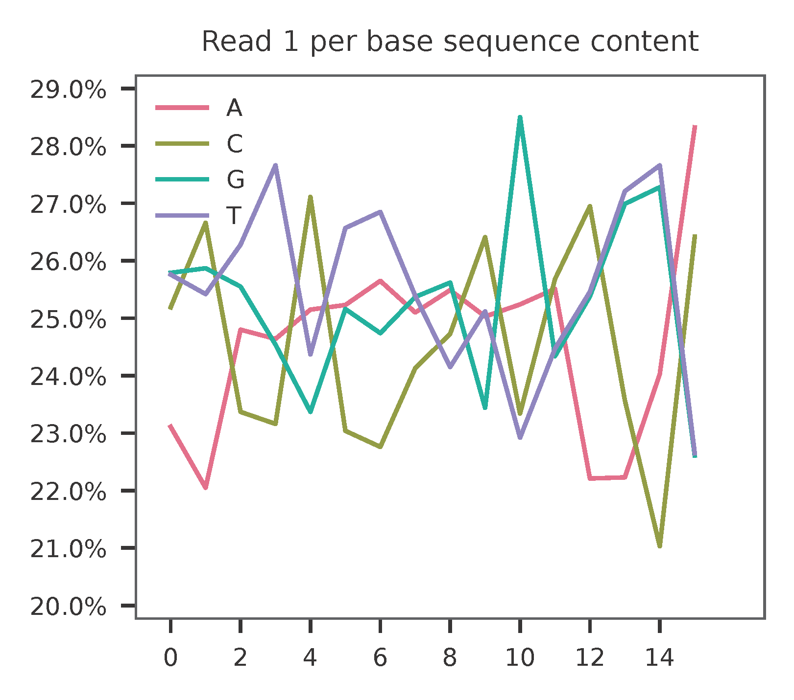
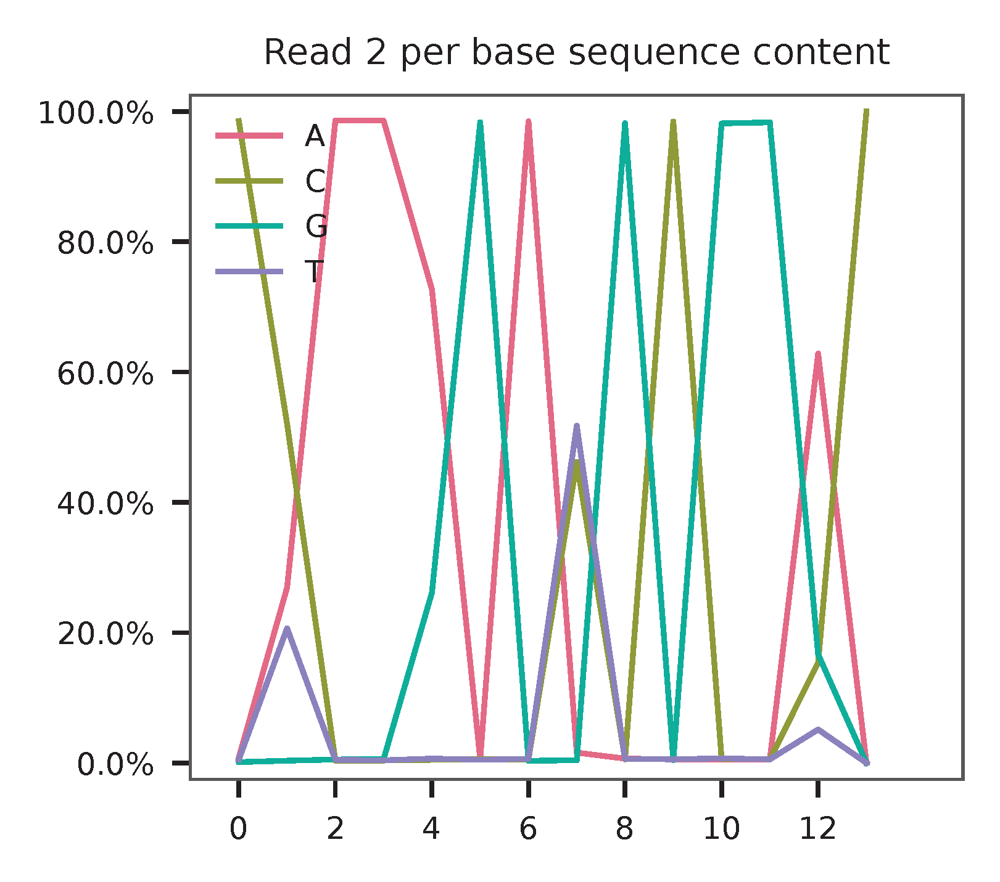
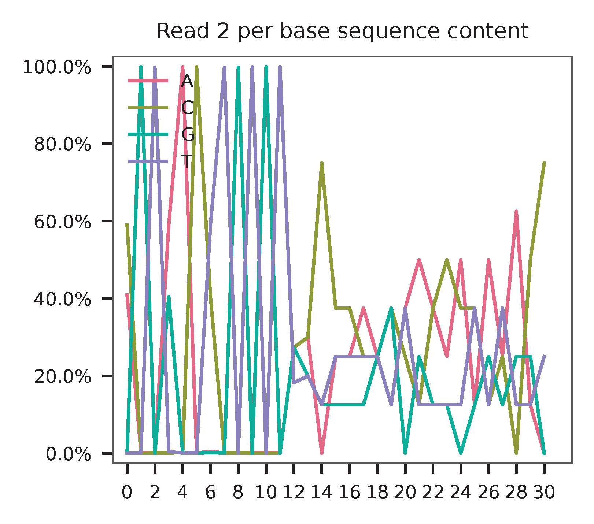
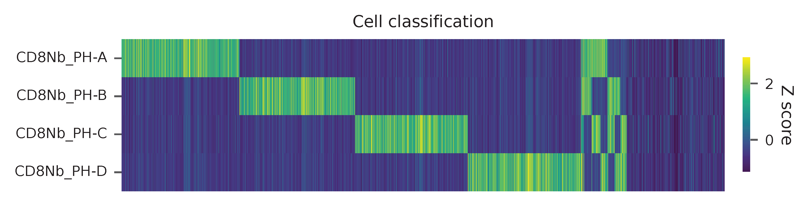
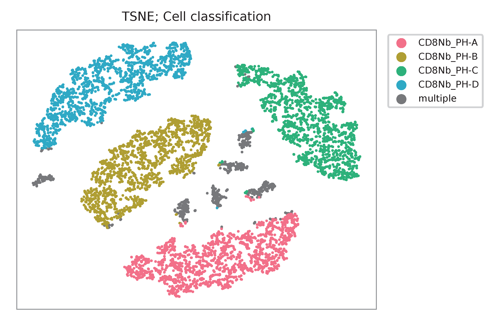

PHAGE-ATAC; Anti-CD8 Phage Hashing Single-cell ATAC-seq Using CD8 T Cells from Four Human Donors¶
Dataset: PHAGE-ATAC: four anti-CD8 phage hashtags and a subsequent hashing experiment using CD8 T cells from four human donors
Fiskin, E., Lareau, C.A., Ludwig, L.S., Eraslan, G., Liu, F., Ring, A.M., Xavier, R.J., and Regev, A. (2021). Single-cell profiling of proteins and chromatin accessibility using PHAGE-ATAC. Nat. Biotechnol. 1–8.
Preparation¶
Download fastq files from Gene Expression Omnibus.
Inspect fastq files (This is a single-cell ATAC-seq library, we willneed all 3 reads).
$ zcat SRR12588752_1.fastq.gz | head
@SRR12588752.1 NB501583:726:HMCKKBGXF:1:11101:16677:1031 length=34
CAGCTNTTCCTGCGCTCGACACCGTTACTTGTGT
+SRR12588752.1 NB501583:726:HMCKKBGXF:1:11101:16677:1031 length=34
AAAAA#EEEEEEEEEEEEEEEEEEEEEEEEEEEE
@SRR12588752.2 NB501583:726:HMCKKBGXF:1:11101:14655:1033 length=34
CAGCTNTTCCTGCGCTGCTTACCGTAACTTGTGT
+SRR12588752.2 NB501583:726:HMCKKBGXF:1:11101:14655:1033 length=34
AAAAA#EEEEEEEAEEEEEEEEEEEEEEEEEEEE
@SRR12588752.3 NB501583:726:HMCKKBGXF:1:11101:17414:1034 length=34
CAGCTNTTCCTGCGCTCGACACCGTTACTTGTGT
$ zcat SRR12588752_2.fastq.gz | head
@SRR12588752.1 NB501583:726:HMCKKBGXF:1:11101:16677:1031 length=16
NNNNAGNNNNNATGNN
+SRR12588752.1 NB501583:726:HMCKKBGXF:1:11101:16677:1031 length=16
####AE#####EEE##
@SRR12588752.2 NB501583:726:HMCKKBGXF:1:11101:14655:1033 length=16
NNAACTNNNNNAAAAN
+SRR12588752.2 NB501583:726:HMCKKBGXF:1:11101:14655:1033 length=16
##//A6#####////#
@SRR12588752.3 NB501583:726:HMCKKBGXF:1:11101:17414:1034 length=16
NNTCAGTNNNTCAGGN
$ zcat SRR12588752_3.fastq.gz | head
@SRR12588752.1 NB501583:726:HMCKKBGXF:1:11101:16677:1031 length=34
GATACCGNGGNNNNNNNNNNNNNNNNNNNNNNNN
+SRR12588752.1 NB501583:726:HMCKKBGXF:1:11101:16677:1031 length=34
AAAAAEE#EE########################
@SRR12588752.2 NB501583:726:HMCKKBGXF:1:11101:14655:1033 length=34
GATACCGCGGTGTNTNANNNCNNNNNAGNNNCNN
+SRR12588752.2 NB501583:726:HMCKKBGXF:1:11101:14655:1033 length=34
AAAAAEEEEEEEE#E#E###E#####EE###E##
@SRR12588752.3 NB501583:726:HMCKKBGXF:1:11101:17414:1034 length=34
GATACCGCGGTGTATNANNNGNNNNNAANNNGNN
Prepare cell barcodes (downloaded from the manuscript’s GitHub). These are the cell-associated barcodes, they are generated based on the scATAC-seq library.
$ wget https://raw.githubusercontent.com/evgenijfiskin/phage-atac/master/cd8_hashing/data/barcodes.tsv
Inspect cell barcodes.
$ wc -l barcodes.tsv
8366
$ head barcodes.tsv
AAACGAAAGACCATAA-1
AAACGAAAGGAGGCGA-1
AAACGAAAGGCGATTG-1
AAACGAACAAGAGATT-1
AAACGAACACAGTTAC-1
AAACGAACACTGATTG-1
AAACGAACACTTACAG-1
AAACGAACAGCAGGTA-1
AAACGAACAGCGTACC-1
AAACGAAGTTGCAGAG-1
Prepare feature barcodes. CDR3 barcode sequences (phage-derived tag, PDT) can be found in Supplementary Table 4 and are truncated to only keep the variable parts.
$ cat feature_barcodes_R3_truncated.tsv
CD8Nb_PH-A CAAAGGACGCGG
CD8Nb_PH-B CTAAAGACGCGG
$ cat feature_barcodes_R1_truncated.tsv
CD8Nb_PH-C CGTAACTTGTGT
CD8Nb_PH-D AGTGACCTGTGT
First, we screen reads that have the constant sequence (GATACCGCGGTGTATTATTGCG) at the beginning of the CDR3 barcode sequences on read 3 (cutadapt, version 3.7).
$ cutadapt \
--cores 0 \
--front GATACCGCGGTGTATTATTGCG \
--minimum-length 12:16 \
--trimmed-only \
--output SRR12588752_3_trimmed.fq.gz --paired-output SRR12588752_2_trimmed.fq.gz \
SRR12588752_3.fastq.gz SRR12588752_2.fastq.gz
Preview the filtering result: 51,140,637 out of 54,274,791 (94.2%) read pairs are kept for phage-derived tag (PDT) identification.
== Read fate breakdown ==
Pairs that were too short: 652,917 (1.2%)
Pairs discarded as untrimmed: 2,481,237 (4.6%)
Pairs written (passing filters): 51,140,637 (94.2%)
Then, for read 1 (CAGCTCTTCCTGCGCTGCTTAC).
$ cutadapt \
--cores 0 \
--front CAGCTCTTCCTGCGCTGCTTAC \
--minimum-length 12:16 \
--trimmed-only \
--output SRR12588752_1_trimmed.fq.gz --paired-output SRR12588752_2_trimmed.fq.gz \
SRR12588752_1.fastq.gz SRR12588752_2.fastq.gz
Preview the filtering result: 25,988,762 out of 54,274,791 (47.9%) read pairs are kept for phage-derived tag (PDT) identification.
== Read fate breakdown ==
Pairs that were too short: 16,644 (0.0%)
Pairs discarded as untrimmed: 28,269,385 (52.1%)
Pairs written (passing filters): 25,988,762 (47.9%)
QC¶
Sample the first 10,000 (set by -n, default 100,000) read pairs for quality control. Use -t to set the number of threads. By default, the diagnostic results and plots are generated in the qc directory (set by --output_directory), and full length of read 1 and read 2 are searched against reference cell and feature barcodes, respectively. The per base content of both read pairs and the distribution of matched barcode positions are summarized. Use -r1_c and/or -r2_c to limit the search range. Use -cb_n and/or -fb_n to set the mismatch tolerance for cell and feature barcode matching (default 3).
This library is built using 10x Genomics’ Chromium Single Cell ATAC Reagent Kits. The 10x Barcode (16 bp) is sequenced in the i5 index read. 10x Genomics’ Cell Ranger ATAC may convert the raw 16 bp sequences to their reverse-complement counterparts as cell barcodes in outputs. In fba, use -cb_rc to convert cell barcode sequences to their reverse-complement counterparts for processing (default False).
R3¶
fba qc \
-1 SRR12588752_2_trimmed.fq.gz \
-2 SRR12588752_3_trimmed.fq.gz \
-w barcodes.tsv \
-f feature_barcodes_R3_truncated.txt \
-n 10000
This library is built using the Chromium Single Cell ATAC Reagent Kits and sequenced on Illumina NextSeq 500. The GC content of cell barcodes are quite even.
{kind=link}
As for read 3, based on the per base content, it suggests low complexity.
{kind=link}
{kind=link}
The detailed qc results are stored in feature_barcoding_output.tsv.gz file. matching_pos columns indicate the matched positions on reads. matching_description columns indicate mismatches in substitutions:insertions:deletions format.
$ m1_1 gzip -dc feature_barcoding_output.tsv.gz | head
read1_seq cell_barcode cb_num_mismatches read2_seq feature_barcode fb_num_mismatches
NTGTTGCTGGTTAGAA CTGTTGCTGGTTAGAA 1 CAAAGGACGCGG CD8Nb_PH-A_CAAAGGACGCGG 0
NTCGACCGATTGCGTA GTCGACCGATTGCGTA 1 CTAAAGACGCGG CD8Nb_PH-B_CTAAAGACGCGG 0
GCCGAACTGTTAGAAG GCCGAACTGTTAGAAG 0 CAAAGGACGCGG CD8Nb_PH-A_CAAAGGACGCGG 0
TGAGCGCACACCTTGA TGAGCGCACACCTTGA 0 CAAAGGACGCGG CD8Nb_PH-A_CAAAGGACGCGG 0
AATTCTGCTTGGCTGC AATTCTGCTTGGCTGC 0 CAAAGGACGCGG CD8Nb_PH-A_CAAAGGACGCGG 0
GGAATGGTGACCGTGC GGAATGGTGACCGTGC 0 CAAAGGACGCGG CD8Nb_PH-A_CAAAGGACGCGG 0
AGGAATTGATTCGCCT AGGAATTGATTCGCCT 0 CAAAGGACGCGG CD8Nb_PH-A_CAAAGGACGCGG 0
CCAAGTTGATAATAGG CCAAGTTGATAATAGG 0 CTAAAGACGCGG CD8Nb_PH-B_CTAAAGACGCGG 0
CCGCAAGTGAATCCAC CCGCAAGTGAATCCAC 0 CAAAGGACGCGG CD8Nb_PH-A_CAAAGGACGCGG 0
R1¶
fba qc \
-1 SRR12588752_2_trimmed.fq.gz \
-2 SRR12588752_1_trimmed.fq.gz \
-w barcodes.tsv \
-f feature_barcodes_R1_truncated.txt \
-n 10000
As for read 2, based on the per base content, it suggests that low complexity and there are almost constant bases at the beginning of the reads.
{kind=link}
{kind=link}
The detailed qc results are stored in feature_barcoding_output.tsv.gz file. matching_pos columns indicate the matched positions on reads. matching_description columns indicate mismatches in substitutions:insertions:deletions format.
$ m1_1 gzip -dc feature_barcoding_output.tsv.gz | head
read1_seq cell_barcode cb_num_mismatches read2_seq feature_barcode fb_num_mismatches
NCTCGGGACGTCTGGC ACTCGGGACGTCTGGC 1 AGTGACCTGTGT CD8Nb_PH-D_AGTGACCTGTGT 0
NCTAAGACTTTATGGC GCTAAGACTTTATGGC 1 AGTGACCTGTGT CD8Nb_PH-D_AGTGACCTGTGT 0
NACGGAAGATCGTAAC CACGGAAGATCGTAAC 1 AGTGACCTGTGT CD8Nb_PH-D_AGTGACCTGTGT 0
NTGTTGTGAGTCCCGA GTGTTGTGAGTCCCGA 1 AGTGACCTGTGT CD8Nb_PH-D_AGTGACCTGTGT 0
CCTCCTGCTATCAGGG CCTCCTGCTATCAGGG 0 AGTGACCTGTGT CD8Nb_PH-D_AGTGACCTGTGT 0
GTTGATTCTCGAAGCA GTTGATTCTCGAAGCA 0 AGTGACCTGTGT CD8Nb_PH-D_AGTGACCTGTGT 0
TGGTTAGACTCCGTAA TGGTTAGACTCCGTAA 0 AGTGACCTGTGT CD8Nb_PH-D_AGTGACCTGTGT 0
GCCTCTTGACTGGGTC GCCTCTTGACTGGGTC 0 CGTAACTTGTGT CD8Nb_PH-C_CGTAACTTGTGT 0
AGGTAGCGAGAGTAAT AGGTAGCGAGAGTAAT 0 AGTGACCTGTGT CD8Nb_PH-D_AGTGACCTGTGT 0
Barcode extraction¶
R3¶
Search ranges are set to 0,16 on read 2 and 0,12 on read 3. One mismatch for cell and feature barcodes (-cb_m, -cf_m) are allowed.
$ fba extract \
-1 SRR12588752_2_trimmed.fq.gz \
-2 SRR12588752_3_trimmed.fq.gz \
-w barcodes.tsv \
-f feature_barcodes_R3_truncated.txt \
-o feature_barcoding_output_R3.tsv.gz \
-r1_c 0,16 \
-r2_c 0,12 \
-cb_m 1 \
-fb_m 1
Preview of result.
$ gzip -dc feature_barcoding_output_R3.tsv.gz | head
read1_seq cell_barcode cb_num_mismatches read2_seq feature_barcode fb_num_mismatches
NTGTTGCTGGTTAGAA CTGTTGCTGGTTAGAA 1 CAAAGGACGCGG CD8Nb_PH-A_CAAAGGACGCGG 0
NTCGACCGATTGCGTA GTCGACCGATTGCGTA 1 CTAAAGACGCGG CD8Nb_PH-B_CTAAAGACGCGG 0
GCCGAACTGTTAGAAG GCCGAACTGTTAGAAG 0 CAAAGGACGCGG CD8Nb_PH-A_CAAAGGACGCGG 0
TGAGCGCACACCTTGA TGAGCGCACACCTTGA 0 CAAAGGACGCGG CD8Nb_PH-A_CAAAGGACGCGG 0
AATTCTGCTTGGCTGC AATTCTGCTTGGCTGC 0 CAAAGGACGCGG CD8Nb_PH-A_CAAAGGACGCGG 0
GGAATGGTGACCGTGC GGAATGGTGACCGTGC 0 CAAAGGACGCGG CD8Nb_PH-A_CAAAGGACGCGG 0
AGGAATTGATTCGCCT AGGAATTGATTCGCCT 0 CAAAGGACGCGG CD8Nb_PH-A_CAAAGGACGCGG 0
CCAAGTTGATAATAGG CCAAGTTGATAATAGG 0 CTAAAGACGCGG CD8Nb_PH-B_CTAAAGACGCGG 0
CCGCAAGTGAATCCAC CCGCAAGTGAATCCAC 0 CAAAGGACGCGG CD8Nb_PH-A_CAAAGGACGCGG 0
Result summary.
10,543,901 out of 51,140,637 read pairs have valid cell and feature barcodes.
2022-03-13 00:13:02,564 - fba.__main__ - INFO - fba version: 0.0.x
2022-03-13 00:13:02,564 - fba.__main__ - INFO - Initiating logging ...
2022-03-13 00:13:02,564 - fba.__main__ - INFO - Python version: 3.10
2022-03-13 00:13:02,564 - fba.__main__ - INFO - Using extract subcommand ...
2022-03-13 00:13:02,589 - fba.levenshtein - INFO - Number of reference cell barcodes: 8,366
2022-03-13 00:13:02,590 - fba.levenshtein - INFO - Number of reference feature barcodes: 2
2022-03-13 00:13:02,590 - fba.levenshtein - INFO - Read 1 coordinates to search: [0, 16)
2022-03-13 00:13:02,590 - fba.levenshtein - INFO - Read 2 coordinates to search: [0, 12)
2022-03-13 00:13:02,590 - fba.levenshtein - INFO - Cell barcode maximum number of mismatches: 1
2022-03-13 00:13:02,590 - fba.levenshtein - INFO - Feature barcode maximum number of mismatches: 1
2022-03-13 00:13:02,590 - fba.levenshtein - INFO - Read 1 maximum number of N allowed: 3
2022-03-13 00:13:02,590 - fba.levenshtein - INFO - Read 2 maximum number of N allowed: 3
2022-03-13 00:13:02,809 - fba.levenshtein - INFO - Matching ...
2022-03-13 00:16:00,978 - fba.levenshtein - INFO - Read pairs processed: 10,000,000
2022-03-13 00:18:58,488 - fba.levenshtein - INFO - Read pairs processed: 20,000,000
2022-03-13 00:21:55,956 - fba.levenshtein - INFO - Read pairs processed: 30,000,000
2022-03-13 00:24:53,698 - fba.levenshtein - INFO - Read pairs processed: 40,000,000
2022-03-13 00:27:51,819 - fba.levenshtein - INFO - Read pairs processed: 50,000,000
2022-03-13 00:28:12,045 - fba.levenshtein - INFO - Number of read pairs processed: 51,140,637
2022-03-13 00:28:12,045 - fba.levenshtein - INFO - Number of read pairs w/ valid barcodes: 10,543,901
2022-03-13 00:28:12,060 - fba.__main__ - INFO - Done.
R1¶
Search ranges are set to 0,16 on read 2 and 0,12 on read 1. One mismatch for cell and feature barcodes (-cb_m, -cf_m) are allowed.
$ fba extract \
-1 SRR12588752_2_trimmed.fq.gz \
-2 SRR12588752_1_trimmed.fq.gz \
-w barcodes.tsv \
-f feature_barcodes_R1_truncated.txt \
-o feature_barcoding_output_R1.tsv.gz \
-r1_c 0,16 \
-r2_c 0,12 \
-cb_m 1 \
-fb_m 1
Preview of result.
$ gzip -dc feature_barcoding_output_R1.tsv.gz | head
read1_seq cell_barcode cb_num_mismatches read2_seq feature_barcode fb_num_mismatches
NCTCGGGACGTCTGGC ACTCGGGACGTCTGGC 1 AGTGACCTGTGT CD8Nb_PH-D_AGTGACCTGTGT 0
NCTAAGACTTTATGGC GCTAAGACTTTATGGC 1 AGTGACCTGTGT CD8Nb_PH-D_AGTGACCTGTGT 0
NACGGAAGATCGTAAC CACGGAAGATCGTAAC 1 AGTGACCTGTGT CD8Nb_PH-D_AGTGACCTGTGT 0
NTGTTGTGAGTCCCGA GTGTTGTGAGTCCCGA 1 AGTGACCTGTGT CD8Nb_PH-D_AGTGACCTGTGT 0
CCTCCTGCTATCAGGG CCTCCTGCTATCAGGG 0 AGTGACCTGTGT CD8Nb_PH-D_AGTGACCTGTGT 0
GTTGATTCTCGAAGCA GTTGATTCTCGAAGCA 0 AGTGACCTGTGT CD8Nb_PH-D_AGTGACCTGTGT 0
TGGTTAGACTCCGTAA TGGTTAGACTCCGTAA 0 AGTGACCTGTGT CD8Nb_PH-D_AGTGACCTGTGT 0
GCCTCTTGACTGGGTC GCCTCTTGACTGGGTC 0 CGTAACTTGTGT CD8Nb_PH-C_CGTAACTTGTGT 0
AGGTAGCGAGAGTAAT AGGTAGCGAGAGTAAT 0 AGTGACCTGTGT CD8Nb_PH-D_AGTGACCTGTGT 0
Result summary.
11,128,546 out of 25,988,762 read pairs have valid cell and feature barcodes.
2022-03-12 23:29:33,460 - fba.__main__ - INFO - fba version: 0.0.x
2022-03-12 23:29:33,460 - fba.__main__ - INFO - Initiating logging ...
2022-03-12 23:29:33,460 - fba.__main__ - INFO - Python version: 3.10
2022-03-12 23:29:33,460 - fba.__main__ - INFO - Using extract subcommand ...
2022-03-12 23:29:33,488 - fba.levenshtein - INFO - Number of reference cell barcodes: 8,366
2022-03-12 23:29:33,488 - fba.levenshtein - INFO - Number of reference feature barcodes: 2
2022-03-12 23:29:33,488 - fba.levenshtein - INFO - Read 1 coordinates to search: [0, 16)
2022-03-12 23:29:33,488 - fba.levenshtein - INFO - Read 2 coordinates to search: [0, 12)
2022-03-12 23:29:33,488 - fba.levenshtein - INFO - Cell barcode maximum number of mismatches: 1
2022-03-12 23:29:33,488 - fba.levenshtein - INFO - Feature barcode maximum number of mismatches: 1
2022-03-12 23:29:33,488 - fba.levenshtein - INFO - Read 1 maximum number of N allowed: 3
2022-03-12 23:29:33,488 - fba.levenshtein - INFO - Read 2 maximum number of N allowed: 3
2022-03-12 23:29:33,707 - fba.levenshtein - INFO - Matching ...
2022-03-12 23:33:10,471 - fba.levenshtein - INFO - Read pairs processed: 10,000,000
2022-03-12 23:36:47,019 - fba.levenshtein - INFO - Read pairs processed: 20,000,000
2022-03-12 23:38:56,544 - fba.levenshtein - INFO - Number of read pairs processed: 25,988,762
2022-03-12 23:38:56,544 - fba.levenshtein - INFO - Number of read pairs w/ valid barcodes: 11,128,546
2022-03-12 23:38:56,558 - fba.__main__ - INFO - Done.
Matrix generation¶
Only fragments with correct (passed the criteria) cell and feature barcodes are included. Use -ul to set the UMI length (default 12). Setting to 0 means no UMIs and fragment counts are summarized instead. The generated feature count matrix can be easily imported into well-established single cell analysis packages: Seruat and Scanpy.
$ fba count \
-i feature_barcoding_output_R1.tsv.gz \
-i feature_barcoding_output_R3.tsv.gz \
-o matrix_featurecount.csv.gz \
-ul 0
Result summary.
39.9 % (21,672,447 out of 54,274,791) of total read pairs have valid cell and feature barcodes. The median count per cell for this phage-derived tag library is 2,261.0.
2022-03-13 00:36:01,502 - fba.__main__ - INFO - fba version: 0.0.x
2022-03-13 00:36:01,502 - fba.__main__ - INFO - Initiating logging ...
2022-03-13 00:36:01,502 - fba.__main__ - INFO - Python version: 3.9
2022-03-13 00:36:01,502 - fba.__main__ - INFO - Using count subcommand ...
2022-03-13 00:36:02,348 - fba.count - INFO - UMI-tools version: 1.1.1
2022-03-13 00:36:02,348 - fba.count - INFO - UMI starting position on read 1: 16
2022-03-13 00:36:02,348 - fba.count - INFO - UMI starting position on read 1: 16
2022-03-13 00:36:02,348 - fba.count - INFO - UMI length: 0
2022-03-13 00:36:02,348 - fba.count - INFO - UMI-tools deduplication threshold: 1
2022-03-13 00:36:02,348 - fba.count - INFO - UMI-tools deduplication method: directional
2022-03-13 00:36:02,348 - fba.count - INFO - Header line: read1_seq cell_barcode cb_num_mismatches read2_seq feature_barcode fb_num_mismatches
2022-03-13 00:36:20,914 - fba.count - INFO - Number of read pairs processed: 21,672,447
2022-03-13 00:36:20,917 - fba.count - INFO - Number of cell barcodes detected: 8,366
2022-03-13 00:36:20,917 - fba.count - INFO - Number of features detected: 4
2022-03-13 00:36:20,917 - fba.count - INFO - Counting ...
2022-03-13 00:36:21,009 - fba.count - INFO - Total count after deduplication: 21,672,447
2022-03-13 00:36:21,016 - fba.count - INFO - Median number of count per cell: 2,261.0
2022-03-13 00:36:21,103 - fba.__main__ - INFO - Done.
Demultiplexing¶
Negative binomial distribution¶
Cells are demultiplexed based on the feature count matrix. Demultiplexing method 1 (set by -dm) is implemented based on the method described by Stoeckius, M., et al. (2018) with some modifications. A cell identity matrix is generated in the output directory (set by --output_directory, default demultiplexed): 0 means negative, 1 means positive. Use -q to set the quantile threshold for demulitplexing (default 0.9999). Set -v to create visualization plots.
$ fba demultiplex \
-i matrix_featurecount.csv.gz \
-q 0.99 \
-v
2022-03-13 00:47:41,569 - fba.__main__ - INFO - fba version: 0.0.x
2022-03-13 00:47:41,569 - fba.__main__ - INFO - Initiating logging ...
2022-03-13 00:47:41,569 - fba.__main__ - INFO - Python version: 3.10
2022-03-13 00:47:41,569 - fba.__main__ - INFO - Using demultiplex subcommand ...
2022-03-13 00:47:49,145 - fba.__main__ - INFO - Skipping arguments: "-p/--prob"
2022-03-13 00:47:49,145 - fba.demultiplex - INFO - Output directory: demultiplexed_nb_0.99
2022-03-13 00:47:49,145 - fba.demultiplex - INFO - Demultiplexing method: 1
2022-03-13 00:47:49,146 - fba.demultiplex - INFO - UMI normalization method: clr
2022-03-13 00:47:49,146 - fba.demultiplex - INFO - Visualization: On
2022-03-13 00:47:49,146 - fba.demultiplex - INFO - Visualization method: tsne
2022-03-13 00:47:49,146 - fba.demultiplex - INFO - Loading feature count matrix: matrix_featurecount.csv.gz ...
2022-03-13 00:47:49,324 - fba.demultiplex - INFO - Number of cells: 8,366
2022-03-13 00:47:49,324 - fba.demultiplex - INFO - Number of positive cells for a feature to be included: 200
2022-03-13 00:47:49,327 - fba.demultiplex - INFO - Number of features: 4 / 4 (after filtering / original in the matrix)
2022-03-13 00:47:49,327 - fba.demultiplex - INFO - Features: CD8Nb_PH-A CD8Nb_PH-B CD8Nb_PH-C CD8Nb_PH-D
2022-03-13 00:47:49,327 - fba.demultiplex - INFO - Total UMIs: 21,672,447 / 21,672,447
2022-03-13 00:47:49,328 - fba.demultiplex - INFO - Median number of UMIs per cell: 2,261.0 / 2,261.0
2022-03-13 00:47:49,328 - fba.demultiplex - INFO - Demultiplexing ...
2022-03-13 00:48:53,685 - fba.demultiplex - INFO - Generating heatmap ...
2022-03-13 00:48:59,759 - fba.demultiplex - INFO - Embedding ...
2022-03-13 00:49:20,128 - fba.__main__ - INFO - Done.
Heatmap of the relative abundance of features (phage-derived tags, PDTs) across all cells. Each column represents a single cell. This is a re-creation of Fig. 3b in Fiskin, E., et al. (2021).
{kind=link}
Preview the demultiplexing result: the numbers of singlets, multiplets and negatives are 6,373 (76.2%), 638 (7.6%), and 1,355 (16.2%), respectively.
In [1]: import pandas as pd
In [2]: m = pd.read_csv('demultiplexed/matrix_cell_identity.csv.gz', index_col=0)
In [3]: m.loc[:, m.sum(axis=0) == 1].sum(axis=1)
Out[3]:
CD8Nb_PH-A 1638
CD8Nb_PH-B 1603
CD8Nb_PH-C 1564
CD8Nb_PH-D 1568
dtype: int64
In [4]: sum(m.sum(axis=0) == 1)
Out[4]: 6373
In [5]: sum(m.sum(axis=0) > 1)
Out[5]: 638
In [6]: sum(m.sum(axis=0) == 0)
Out[6]: 1355
In [7]: m.shape
Out[7]: (4, 8366)
t-SNE embedding of cells based on the abundance of features (phage-derived tags, no transcriptome information used). Colors indicate the hashtag status for each cell, as called by FBA. This is a re-creation of Fig. 3d in Fiskin, E., et al. (2021).
{kind=link}